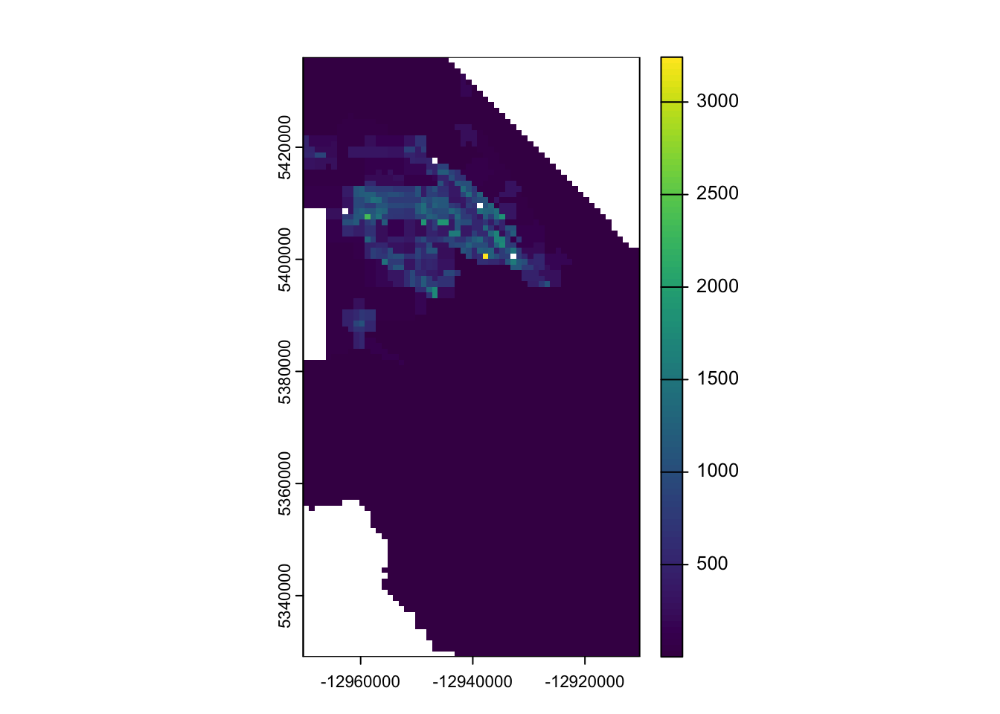
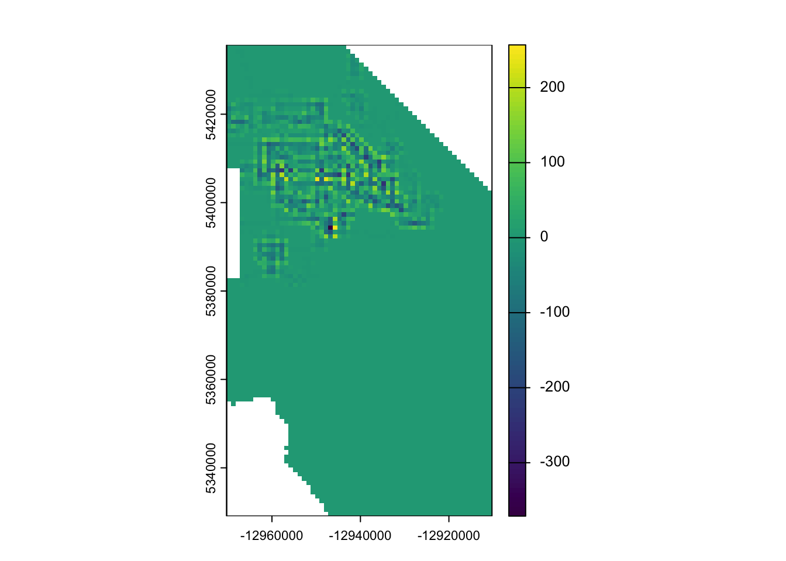

We’ll start by loading our packages and our download script. You’ll notice that you get some conflict warnings when you load terra and the tidyverse. THIS IS IMPORTANT as it means that those conflicting functions may not behave the way you are used to. The way to ensure that you’re calling the right function is to call them explicitly by using package::your_function(). You’ll see this more below.
Code
library(sf)
Warning: package 'sf' was built under R version 4.4.1
Linking to GEOS 3.13.0, GDAL 3.8.5, PROJ 9.5.1; sf_use_s2() is TRUE
Code
library(tidyverse)
Warning: package 'ggplot2' was built under R version 4.4.1
Warning: package 'tibble' was built under R version 4.4.1
Warning: package 'purrr' was built under R version 4.4.1
Warning: package 'stringr' was built under R version 4.4.1
── Conflicts ────────────────────────────────────────── tidyverse_conflicts() ──
✖ dplyr::filter() masks stats::filter()
✖ dplyr::lag() masks stats::lag()
ℹ Use the conflicted package (<http://conflicted.r-lib.org/>) to force all conflicts to become errors
Code
library(terra)
terra 1.7.78
Attaching package: 'terra'
The following object is masked from 'package:tidyr':
extract
We’re going to use two new datasets for this lesson. To keep them from getting confused, I’ve put them in a new Google Drive folder so make sure you update the link in our function call!
These datasets reflect the block-group level population for Ada County (downloaded using the tidycensus package) and the location of all City of Boise streetlights (downloaded from the Boise Open Data portal). Let’s load them and inspect their CRS and geometry.
Coordinate Reference System:
User input: NAD83
wkt:
GEOGCRS["NAD83",
DATUM["North American Datum 1983",
ELLIPSOID["GRS 1980",6378137,298.257222101,
LENGTHUNIT["metre",1]]],
PRIMEM["Greenwich",0,
ANGLEUNIT["degree",0.0174532925199433]],
CS[ellipsoidal,2],
AXIS["latitude",north,
ORDER[1],
ANGLEUNIT["degree",0.0174532925199433]],
AXIS["longitude",east,
ORDER[2],
ANGLEUNIT["degree",0.0174532925199433]],
ID["EPSG",4269]]
Code
st_crs(boise_streetlights)
Coordinate Reference System:
User input: WGS 84 / Pseudo-Mercator
wkt:
PROJCRS["WGS 84 / Pseudo-Mercator",
BASEGEOGCRS["WGS 84",
ENSEMBLE["World Geodetic System 1984 ensemble",
MEMBER["World Geodetic System 1984 (Transit)"],
MEMBER["World Geodetic System 1984 (G730)"],
MEMBER["World Geodetic System 1984 (G873)"],
MEMBER["World Geodetic System 1984 (G1150)"],
MEMBER["World Geodetic System 1984 (G1674)"],
MEMBER["World Geodetic System 1984 (G1762)"],
MEMBER["World Geodetic System 1984 (G2139)"],
MEMBER["World Geodetic System 1984 (G2296)"],
ELLIPSOID["WGS 84",6378137,298.257223563,
LENGTHUNIT["metre",1]],
ENSEMBLEACCURACY[2.0]],
PRIMEM["Greenwich",0,
ANGLEUNIT["degree",0.0174532925199433]],
ID["EPSG",4326]],
CONVERSION["Popular Visualisation Pseudo-Mercator",
METHOD["Popular Visualisation Pseudo Mercator",
ID["EPSG",1024]],
PARAMETER["Latitude of natural origin",0,
ANGLEUNIT["degree",0.0174532925199433],
ID["EPSG",8801]],
PARAMETER["Longitude of natural origin",0,
ANGLEUNIT["degree",0.0174532925199433],
ID["EPSG",8802]],
PARAMETER["False easting",0,
LENGTHUNIT["metre",1],
ID["EPSG",8806]],
PARAMETER["False northing",0,
LENGTHUNIT["metre",1],
ID["EPSG",8807]]],
CS[Cartesian,2],
AXIS["easting (X)",east,
ORDER[1],
LENGTHUNIT["metre",1]],
AXIS["northing (Y)",north,
ORDER[2],
LENGTHUNIT["metre",1]],
USAGE[
SCOPE["Web mapping and visualisation."],
AREA["World between 85.06°S and 85.06°N."],
BBOX[-85.06,-180,85.06,180]],
ID["EPSG",3857]]
Code
table(st_is_valid(ada_pop))
FALSE TRUE
9 321
Code
table(st_is_valid(boise_streetlights))
TRUE
13822
You should notice 2 things from running this. First, the two datasets have different CRS (as evidenced by your call to st_crs). Second, the ada_pop dataset returns 6 invalid geometries (the table function here returns a count of the different values in the vector created by st_is_valid which in this case are TRUE and FALSE). We can get a better sense for what’s happening here, by adding the reason argument. You’ll see that we have several duplicate vertices.
We should fix these before we get too far down the road. We’ll use the st_make_valid transformer. Then we’ll project the data using another transformer (st_transform) to the same CRS as the streetlight data. Then we’ll double-check to make sure all the geometries are fixed.
Here, we used the st_make_valid approach to transforming the geometries as it is the more powerful and flexible approach. If you try the st_buffer approach, you’ll likely get an error. This is because st_buffer is not as capable of making decisions about self intersections and so it fails.
Calculating New Fields
You might imagine that we are interested in how the spatial arrangement of streetlights is related to population. We could just use the block groups for this, but block groups are defined partially based on the number of people they contain - as such, they have different areas. It probably makes more sense to think through the density of people (which is independent of area). Let’s calculate that now.
You’ll notice that we used a measure (st_area) to calculate the area of each polygon (by referencing the geometry column). We then used the units package to convert that from m2 (because the distance measurement in our CRS is in m) to km2. Then we create our density variable by dividing the population (value) by our newly calculated area.
Making a Raster from Vector Data
Now, we could count the number of streetlights in each block group. Here we use lenghts to count the number of features in boise_streetlights where st_intersects (a predictate) returns TRUE.
Alternatively, we might be interested in maintaining the spatial location of the lights rather than aggregating them. So, rather than counting, we might try to create a continuous surface depicting of population density (i.e., a raster).
We can use terra::rasterize to convert the dens field into a raster. Two things to think about here are a) what is the support underlying our data? and b) what is a sensible resolution for our raster?. Given that we are expressing density as a value/km2, we’ll create a 1km2 resolution template raster and then build our raster.
Code
template_rast <-rast(crs =crs(ada_pop_dens), ext(ada_pop_dens), resolution =1000)density_rast <- terra::rasterize(x =vect(ada_pop_dens), y = template_rast, field ="dens" )plot(density_rast)
You’ll notice that there are a few “holes” in the data (as evidenced by the white squares in the middle of the locations that otherwise have data). There are a few ways to deal with this. The first is to adjust the call to rasterize. we can provide a function to the fun argument to tell rasterize what to do if there are multiple polygons overlapping a cell. Passing a fun can help if there’s ambiguity in the cell, it also allows us pass na.rm to ignore cases where one of the cells is NA.
Code
density_rast_max <- terra::rasterize(x =vect(ada_pop_dens), y = template_rast, field ="dens", fun ="max", na.rm=TRUE )plot(density_rast_max)

In our case, this didn’t quite solve the problem. Instead, we might try a focal filter. This focal approach allows us to use a moving-window approach that might help calculate the missing values. We can set up the weights matrices following our queens and bishops neighbor approach.
Code
rook_mat <-matrix(c(0, 1, 0,1, 1, 1, # center is usually included as 10, 1, 0), nrow =3, byrow =TRUE)queen_mat <-matrix(c(1, 1, 1,1, 1, 1, # center is usually included as 11, 1, 1), nrow =3, byrow =TRUE)density_rast_focal_rook <-focal(density_rast, w = rook_mat, fun ="mean", na.rm=TRUE)density_rast_focal_queen <-focal(density_rast, w = queen_mat, fun ="mean", na.rm=TRUE) plot(density_rast_focal_queen - density_rast_focal_rook)

If you look at ?terra::focal you’ll see the basic structure of the function. The key points here are the w argument, which sets the spatial weights used to calculate the function (this is where our neighbor requirements show up). Then you’ll notice that we provide a fun argument - here we’ve used the mean as a means of smoothing, but you can provide any function that excepts an na.rm argument. We can see the difference by subtracting one result from the other and plotting it.
If you look closely, you’ll see that there’s an na.policy argument which determines whether focal acts on all cells or only those that are NA. Let’s see what happens when we restrict the smoother to just the NA cells.
Code
density_rast_focal_rook_restricted <-focal(density_rast, w = rook_mat, fun ="mean", na.rm=TRUE, na.policy ="only")plot(density_rast_focal_rook_restricted)
You can see from the plotted difference between the original raster and the restricted focal approach that the only differences show up in the cells where NA is true.
Calculating a New Field
We might imagine that our interest is less on getting the population density directly underlying the streetlights, but rather whether there’s a correlation between population and the general pattern of streetlight placement. One way we might approach that would be to look at how far apart streetlights are because we might imagine that areas with low densities of population correlate with low densities of streetlights. We’ve looked at this with our counts above, but what if we look at the actual distance between streetlights (without aggregating). We can do that using the distance function in terra
Like many of the other terra functions, we need to provide the template raster. We also need to convert our sf object to a SpatVector object (using vect). Finally, we tell distance to rasterize our vector data. This helps things go faster, but now assumes that each cell in the template_rast has constant support (i.e., if any part of the template cell has a streetlight then distance is calculated to that cell). You might imagine that this map looks very different if you choose different resolutions for the template raster.
Final Thoughts
You now have had some experience finding and fixing invalid geometries and leveraging the ability to switch between vector and raster data. In our next class, you’ll put all of this together to explore potential correlations with streetlight location amongst different datasets.
Source Code
---title: "More Work With Geometries"---## Objectives1. Use spatial _transformers_ to fix invalid geometries2. Use _measures_ to calculate new fields in vector data3. Convert vector data to raster data4. Create and smooth new raster data## Getting StartedWe'll have to [get our credentials](https://rstudio.aws.boisestate.edu/) and login to a [new RStudio session](https://rstudio.apps.aws.boisestate.edu/). We'll start by loading our packages and our download script. You'll notice that you get some conflict warnings when you load `terra` and the `tidyverse`. **THIS IS IMPORTANT** as it means that those conflicting functions may not behave the way you are used to. The way to ensure that you're calling the right function is to call them _explicitly_ by using `package::your_function()`. You'll see this more below.```{r}library(sf)library(tidyverse)library(terra)library(googledrive)source("scripts/utilities/download_utils.R")```We're going to use two new datasets for this lesson. To keep them from getting confused, I've put them in a new Google Drive folder so make sure you update the link in our function call!```{r dldata}file_list <-drive_ls(drive_get(as_id("https://drive.google.com/drive/folders/1rfVSdCnw8JbOdFN7wzXnLNblO_9tHgpm")))file_list %>% dplyr::select(id, name) %>% purrr::pmap(function(id, name) {gdrive_folder_download(list(id = id, name = name),dstfldr ="inclass11") })```## Load and Inspect DataThese datasets reflect the block-group level population for Ada County (downloaded using the `tidycensus` package) and the location of all City of Boise streetlights (downloaded from the Boise Open Data portal). Let's load them and inspect their CRS and geometry.```{r lddata}ada_pop <-read_sf("data/original/inclass11/adaPopMod.shp")boise_streetlights <-read_sf("data/original/inclass11/boiseStreetlights.shp")st_crs(ada_pop)st_crs(boise_streetlights)table(st_is_valid(ada_pop))table(st_is_valid(boise_streetlights))```You should notice 2 things from running this. First, the two datasets have different CRS (as evidenced by your call to `st_crs`). Second, the `ada_pop` dataset returns 6 invalid geometries (the `table` function here returns a count of the different values in the vector created by `st_is_valid` which in this case are `TRUE` and `FALSE`). We can get a better sense for what's happening here, by adding the `reason` argument. You'll see that we have several duplicate vertices.### Repairing Geometries```{r geomreas}ada_pop_info <- ada_pop %>%mutate(valid =st_is_valid(geometry),reason =st_is_valid(geometry, reason =TRUE),empty =st_is_empty(geometry)) invalid_geoms <- ada_pop_info %>%filter(!valid)```We should fix these before we get too far down the road. We'll use the `st_make_valid` transformer. Then we'll project the data using another transformer (`st_transform`) to the same CRS as the streetlight data. Then we'll double-check to make sure all the geometries are fixed.```{r fixgeom}ada_pop_makevalid <- ada_pop %>%st_transform(., st_crs(boise_streetlights)) %>%st_make_valid() table(st_is_valid(ada_pop_makevalid))table(st_is_empty(ada_pop_makevalid))```Here, we used the `st_make_valid` approach to `transforming` the geometries as it is the more powerful and flexible approach. If you try the `st_buffer` approach, you'll likely get an error. This is because `st_buffer` is not as capable of making decisions about self intersections and so it fails. ## Calculating New FieldsYou might imagine that we are interested in how the spatial arrangement of streetlights is related to population. We could just use the block groups for this, but block groups are defined partially based on the number of people they contain - as such, they have different areas. It probably makes more sense to think through the density of people (which is independent of area). Let's calculate that now.```{r calcdens}ada_pop_dens <- ada_pop_makevalid %>%mutate(area_km2 =as.numeric(st_area(geometry))/1e6,dens =as.numeric(value / area_km2) )```You'll notice that we used a `measure` (`st_area`) to calculate the area of each polygon (by referencing the `geometry` column). We then used the `units` package to convert that from `m2` (because the distance measurement in our CRS is in m) to `km2`. Then we create our density variable by dividing the population (`value`) by our newly calculated area.## Making a Raster from Vector DataNow, we could count the number of streetlights in each block group. Here we use `lenghts` to count the number of features in `boise_streetlights` where `st_intersects` (a _predictate_) returns `TRUE`.```{r ctlights}ada_pop_dens <- ada_pop_dens %>%mutate(n_lights =lengths(st_drop_geometry(st_intersects(ada_pop_dens, boise_streetlights))))```Alternatively, we might be interested in maintaining the spatial location of the lights rather than aggregating them. So, rather than counting, we might try to create a continuous surface depicting of population density (i.e., a raster).We can use `terra::rasterize` to convert the `dens` field into a raster. Two things to think about here are a) what is the support underlying our data? and b) what is a sensible resolution for our raster?. Given that we are expressing density as a value/km2, we'll create a 1km2 resolution template raster and then build our raster.```{r rstdens}template_rast <-rast(crs =crs(ada_pop_dens), ext(ada_pop_dens), resolution =1000)density_rast <- terra::rasterize(x =vect(ada_pop_dens), y = template_rast, field ="dens" )plot(density_rast)```You'll notice that there are a few "holes" in the data (as evidenced by the white squares in the middle of the locations that otherwise have data). There are a few ways to deal with this. The first is to adjust the call to rasterize. we can provide a function to the `fun` argument to tell `rasterize` what to do if there are multiple polygons overlapping a cell. Passing a `fun` can help if there's ambiguity in the cell, it also allows us pass `na.rm` to ignore cases where one of the cells is `NA`.```{r rstupdate}density_rast_max <- terra::rasterize(x =vect(ada_pop_dens), y = template_rast, field ="dens", fun ="max", na.rm=TRUE )plot(density_rast_max)```In our case, this didn't quite solve the problem. Instead, we might try a `focal` filter. This `focal` approach allows us to use a moving-window approach that might help calculate the missing values. We can set up the weights matrices following our queens and bishops neighbor approach.```{r focalmats}rook_mat <-matrix(c(0, 1, 0,1, 1, 1, # center is usually included as 10, 1, 0), nrow =3, byrow =TRUE)queen_mat <-matrix(c(1, 1, 1,1, 1, 1, # center is usually included as 11, 1, 1), nrow =3, byrow =TRUE)density_rast_focal_rook <-focal(density_rast, w = rook_mat, fun ="mean", na.rm=TRUE)density_rast_focal_queen <-focal(density_rast, w = queen_mat, fun ="mean", na.rm=TRUE) plot(density_rast_focal_queen - density_rast_focal_rook)```If you look at `?terra::focal` you'll see the basic structure of the function. The key points here are the `w` argument, which sets the spatial weights used to calculate the function (this is where our neighbor requirements show up). Then you'll notice that we provide a `fun` argument - here we've used the mean as a means of smoothing, but you can provide any function that excepts an `na.rm` argument. We can see the difference by subtracting one result from the other and plotting it. If you look closely, you'll see that there's an `na.policy` argument which determines whether `focal` acts on `all` cells or `only` those that are `NA`. Let's see what happens when we restrict the smoother to just the NA cells.```{r focalrest}density_rast_focal_rook_restricted <-focal(density_rast, w = rook_mat, fun ="mean", na.rm=TRUE, na.policy ="only")plot(density_rast_focal_rook_restricted)plot(density_rast_focal_rook_restricted - density_rast)```You can see from the plotted difference between the original raster and the restricted `focal` approach that the only differences show up in the cells where `NA` is true.## Calculating a New FieldWe might imagine that our interest is less on getting the population density directly underlying the streetlights, but rather whether there's a correlation between population and the general pattern of streetlight placement. One way we might approach that would be to look at how far apart streetlights are because we might imagine that areas with low densities of population correlate with low densities of streetlights. We've looked at this with our counts above, but what if we look at the actual distance between streetlights (without aggregating). We can do that using the `distance` function in `terra````{r rstdist}light_dist <-distance(template_rast, vect(boise_streetlights), rasterize=TRUE)plot(light_dist)```Like many of the other `terra` functions, we need to provide the template raster. We also need to convert our `sf` object to a `SpatVector` object (using `vect`). Finally, we tell `distance` to `rasterize` our vector data. This helps things go faster, but now assumes that each cell in the `template_rast` has constant support (i.e., if any part of the template cell has a streetlight then distance is calculated to that cell). You might imagine that this map looks very different if you choose different resolutions for the template raster.## Final ThoughtsYou now have had some experience finding and fixing invalid geometries and leveraging the ability to switch between vector and raster data. In our next class, you'll put all of this together to explore potential correlations with streetlight location amongst different datasets.